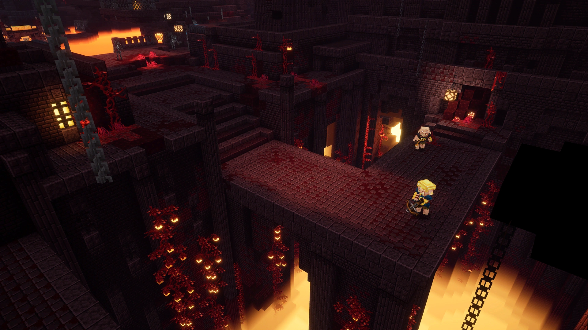
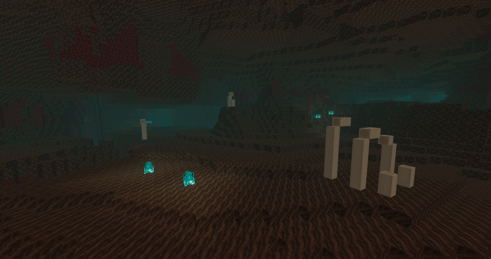
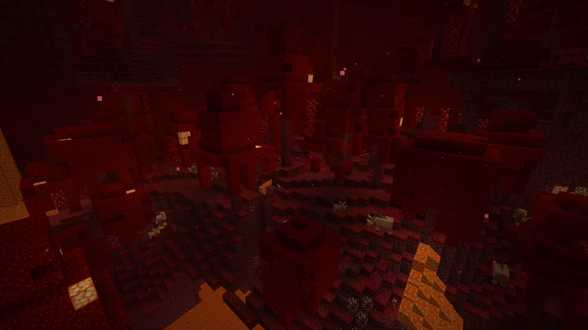

The Nether is a fiery, treacherous dimension filled with dangerous landscapes and unique biomes. From the eerie glow
of the Crimson and Warped Forests to the perilous terrain of Basalt Deltas and Soul Sand Valleys, it challenges
players with hostile mobs, lava lakes, and valuable resources like netherite and ancient debris.



Nether Wastes
The quintessential Nether biome, with vast expanses of soul sand, glowstone, and netherrack. Ghasts and skeletons
roam amidst towering cliffs and lava lakes.
Soul Sand Valley
A desolate, eerie biome filled with soul sand and soul soil, where blue flames flicker amidst the fog. Beware of
ghasts and skeletons lurking in its shadowy depths.
Warped Forest
A surreal, otherworldly forest with twisting warped fungi and endermen roaming its alien landscape. It offers
shelter from hostile mobs and a source of warped wood.
Crimson Forest
A crimson-hued biome dominated by towering crimson fungi and piglins scavenging its terrain. Valuable resources like
nether wart can be found here amidst the danger.
Basalt Deltas
Harsh, volcanic landscapes surrounded by towering basalt pillars and streams of lava. Magma cubes roam amidst the
rugged terrain, providing blackstone and basalt for the player.


.webp)